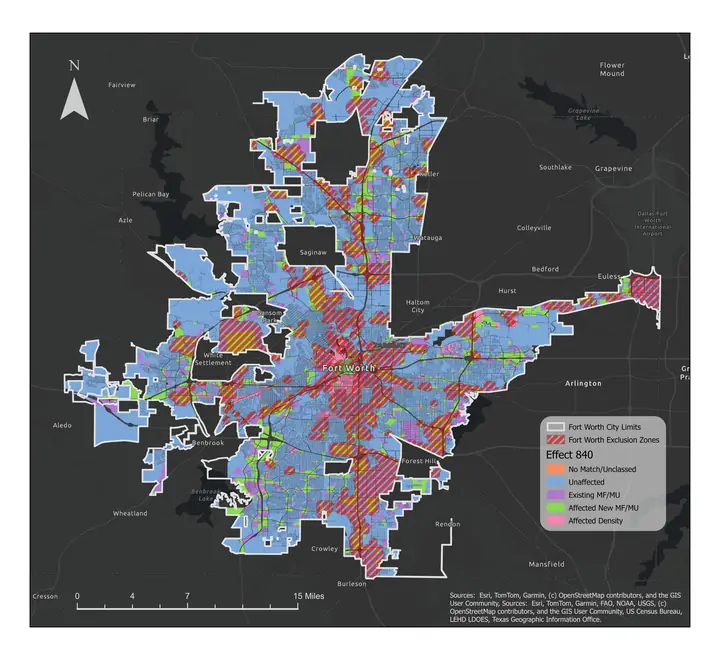
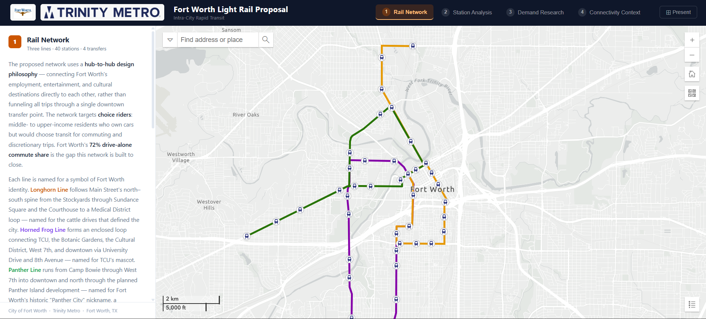

Projects
GIS maps, StoryMaps, research, and cartographic work.
Signature Projects
A small set of independent projects representing the depth and range of my work in cartography, research, and spatial analysis.

Texas SB 840: Zoning & Housing Development Analysis
↗A parcel-level spatial analysis modeling the effects of Texas Senate Bill 840, which expands commercial-to-residential and mixed-use development potential across 18 zoned Texas cities. The study estimates the legally eligible footprint and identifies likely near-term conversion candidates.

Montserrat Mountains Map
↗A stylistic cartographic final project representing the Montserrat Mountains in Catalonia, Spain. Inspired by Eduard Imhof's shaded relief techniques, rendered using Esri Living Atlas and OpenStreetMap data.

Fort Worth Light Rail Feasibility & Connectivity Analysis
↗An interactive ArcGIS Maps SDK web application presenting a GIS-based transit demand and light rail feasibility study for Fort Worth — featuring four tabbed maps covering the proposed rail network, station catchment analysis, demand index, and regional connectivity context.
Collections
Grouped bodies of work organized by medium, method, or course — each collection links to a dedicated gallery or index.
Digital Cartography
A gallery of maps produced across Digital Cartography coursework — each with a title, brief description of the assignment, and an expandable full view of the map.
Browse collection →Research Projects
In-depth academic and independent research projects, each with its own dedicated page covering methodology, findings, and outputs.
Browse collection →Data Visualization
A set of projects focused on rendering data visually — charts, interactive graphics, and spatial visualizations produced across coursework and independent work.
Browse collection →StoryMaps
A tiled index of ArcGIS StoryMaps — each entry includes an overview and links directly to the published StoryMap.
Browse collection →Professional Research Collaborations
Work produced in professional settings during internships and research appointments.
Texas Zoning & Housing Development Analysis (SB 840)
↗Collaborated with the Center for Urban Studies to research and develop a spatial analysis that models and projects the effects of Texas Senate Bill 840, expanding the range of construction for multifamily and mixed-use development across 18 cities in Texas.
North Texas Sanborn Historic Map Database
↗Spatial analysis and georeferencing of 800+ historical Sanborn Insurance maps using ArcGIS Pro and ArcGIS Online, building a usable spatial dataset of historic maps of the North Texas region to support historic and geographic research.
DFW Regional Trail Use — 2024–2025
↗An ArcGIS StoryMap developed during a Transportation Internship at the North Central Texas Council of Governments, visualizing 2024–2025 bicycle and pedestrian trail use data across the Dallas–Fort Worth region.
Not enough? View the full repository here.